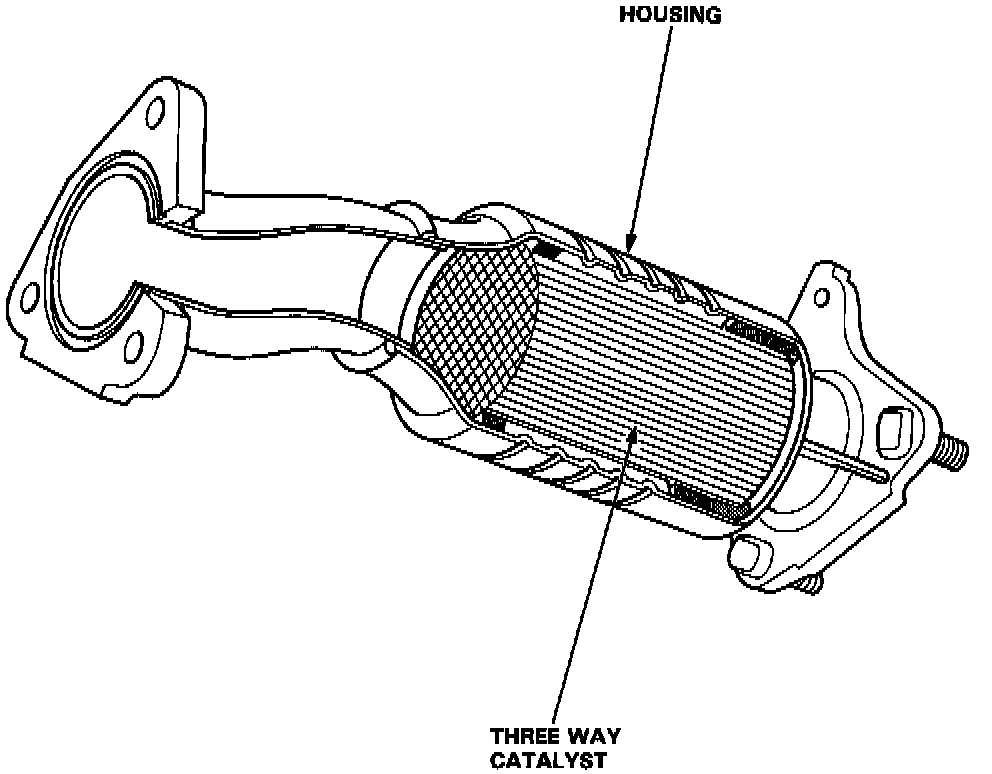
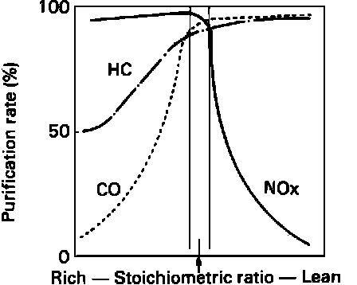

Warm Up Catalytic Converters (GS Only)
Three Way Catalytic Converter:

PURPOSE
During warm up, the Warm Up Three Way Catalytic Converters remove CO, HC, and NOx from the exhaust stream and convert these gases to CO2, N2 and H20.
Converter Efficiency VS. Stoichiometric Fuel/Air Ratio:

OPERATION
These catalytic converters removes CO, HC, and NOx from the exhaust stream most effectively at the stoichiometric (14.7 to 1 plus or minus 1%) fuel-air mixture ratio and at temperatures between 400 to 800° C (750 to 1500° F). Their placement close to the exhaust manifold allows them to reach operational temperature quickly.
CONSTRUCTION
A monolythic three-way device that uses catalytic compounds applied to an integrally constructed honeycomb carrier surface in the center of the exhaust pipe.